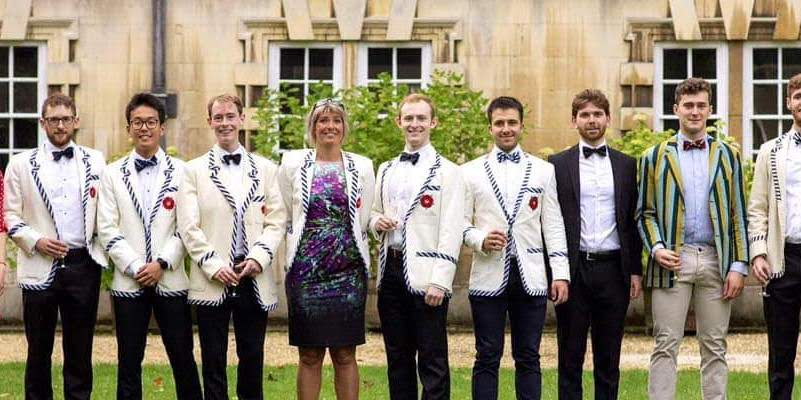
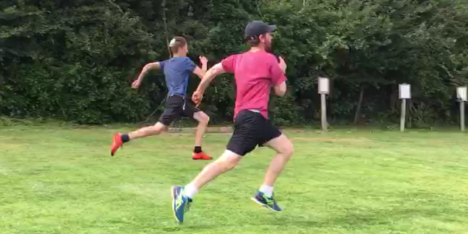

Hi, welcome to my website! I’m Ezra and I’ve have been working as a data scienctist in the city of London for (present_year - 2019) years.
I love hiking, running, rowing, tennis and generally being outdoors.
I really enjoyed the maths I studied at university,
right now my main interests revolve around ML, text analysis, data-vis and R, but these will likely change with time.
For more on my experience and academic background, check out my CV here.


About my blog
I started this blog as a project during the covid pandemic and really enjoyed the process of building and styling a website.
This is my first (very) tentative step into any form of website development. I hope this will only start to look better the more I learn about the web technologies.
I think there are loads of good reason to write a blog; improving communication, motivating yourself to learn new things and ‘giving back’ to the community, to name a few.
I use this blog to write up data science ideas that I feel may appeal to a wider audience. I also maintain a gitbook which i use as a digital garden, a place on the internet where I can leave my mark and others can come to explore my thoughts and ideas.